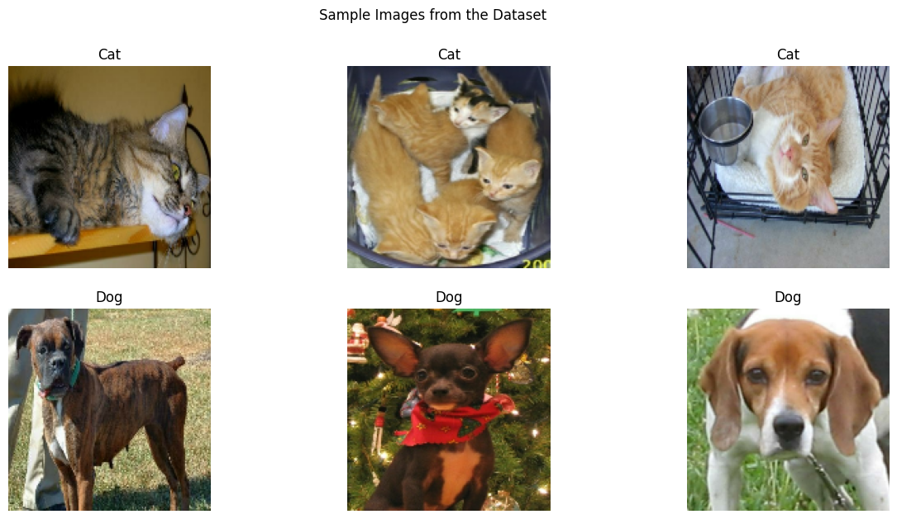
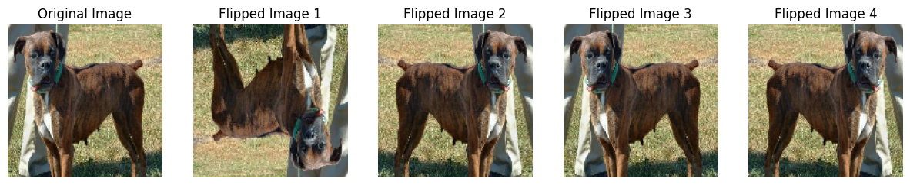
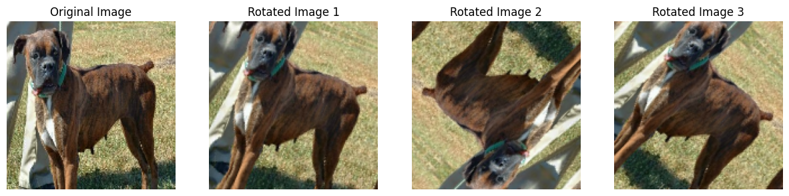

import os
import keras
import numpy as np
from keras import utils
import tensorflow_datasets as tfds
os.environ["KERAS_BACKEND"] = "tensorflow"
import matplotlib.pyplot as pltIntro
Hello! Welcome to my blog post where we will be going over image classification. We will use the Keras library to build and train our models. Our goal is to create a model that will successfully classify pictures of random cats and dogs correctly.
Set Up and Data Loading
Our first step is to import the all the packages and modules we will need throughout this process.
Next we will load in our data and split into training, validation, and test sets.
train_ds, validation_ds, test_ds = tfds.load(
"cats_vs_dogs",
# 40% for training, 10% for validation, and 10% for test (the rest unused)
split=["train[:40%]", "train[40%:50%]", "train[50%:60%]"],
as_supervised=True, # Include labels
)
print(f"Number of training samples: {train_ds.cardinality()}")
print(f"Number of validation samples: {validation_ds.cardinality()}")
print(f"Number of test samples: {test_ds.cardinality()}")Downloading and preparing dataset 786.67 MiB (download: 786.67 MiB, generated: 1.04 GiB, total: 1.81 GiB) to /root/tensorflow_datasets/cats_vs_dogs/4.0.1...
Dataset cats_vs_dogs downloaded and prepared to /root/tensorflow_datasets/cats_vs_dogs/4.0.1. Subsequent calls will reuse this data.
Number of training samples: 9305
Number of validation samples: 2326
Number of test samples: 2326WARNING:absl:1738 images were corrupted and were skippedWe can see that we have 9305 training images, as well as 2326 validation and test images.
Next we need to resize, since some of the images have differnt dimensions. After running this code, all the images would be 150 by 150.
resize_fn = keras.layers.Resizing(150, 150)
train_ds = train_ds.map(lambda x, y: (resize_fn(x), y))
validation_ds = validation_ds.map(lambda x, y: (resize_fn(x), y))
test_ds = test_ds.map(lambda x, y: (resize_fn(x), y))Finally, we need to run this block of code to rapidly read the data.
from tensorflow import data as tf_data
batch_size = 64
train_ds = train_ds.batch(batch_size).prefetch(tf_data.AUTOTUNE).cache()
validation_ds = validation_ds.batch(batch_size).prefetch(tf_data.AUTOTUNE).cache()
test_ds = test_ds.batch(batch_size).prefetch(tf_data.AUTOTUNE).cache()Visualization
Now that we have set up all our data, we can see what our data actually consists of.
The function visualize_samples(), allows to see 3 random images from the cat data and 3 random images from the dog data.
def visualize_samples(dataset, num_samples=6):
plt.figure(figsize=(15, 7))
plt.suptitle('Sample Images from the Dataset')
images_per_class = num_samples // 2 # Number of images per class (cats and dogs)
# Iterate through each batch in the dataset
for images, labels in dataset.take(1): # Only take the first batch for visualization
cat_images = images[labels == 0][:images_per_class]
dog_images = images[labels == 1][:images_per_class]
# Show cat images
for i in range(images_per_class):
plt.subplot(2, images_per_class, i + 1)
plt.imshow(cat_images[i].numpy().astype("uint8")) # Convert to uint8 for visualization
plt.title("Cat")
plt.axis("off")
# Show dog images
for i in range(images_per_class):
plt.subplot(2, images_per_class, images_per_class + i + 1)
plt.imshow(dog_images[i].numpy().astype("uint8")) # Convert to uint8 for visualization
plt.title("Dog")
plt.axis("off")
plt.show()Let’s run the function on our training data, train_ds.
visualize_samples(train_ds)
We can see that the first row of the output is three different images of cats and the second row of the output is three different iamges of dogs.
Label Frequencies
Next, we can create a labels iterator to see how many cat and dog photos we have in our data.
labels_iterator= train_ds.unbatch().map(lambda image, label: label).as_numpy_iterator()# Initialize counters for cat and dog labels
cat_count = 0
dog_count = 0
# Iterate through labels
for label in labels_iterator:
if label == 0:
cat_count += 1
elif label == 1:
dog_count += 1
print("Number of images with label 0 (cat):", cat_count)
print("Number of images with label 1 (dog):", dog_count)Number of images with label 0 (cat): 4637
Number of images with label 1 (dog): 4668We can see that we have 4637 cat images and 4668 dog images.
Next we want to create a baseline model. This model would just guess the most frequent label, so it is the most basic type of classifier. Since there are more dogs, the baseline classifier would always guess dog for every image.
# Total number of images
total_images = cat_count + dog_count
# Baseline prediction: always predict the most frequent class (dog)
baseline_prediction = 1 # Dog label
# Number of correct predictions (assuming all predicted labels are 'dog')
num_correct_predictions = dog_count
# Calculate baseline accuracy
baseline_accuracy = num_correct_predictions / total_images
print("Baseline Accuracy:", baseline_accuracy)Baseline Accuracy: 0.5016657710908113We can see that the baseline accuracy is just 50.17%, we will try to improve on this very low score with our models.
First Model
Our first model will be a Sequential model using Keras. We will have two convoluational layers, two MaxPooling layers, and one flatten, densem and drop layer. Lets define our model under the variable model1.
# Define the model architecture
model1 = keras.Sequential([
# Convolutional layers
keras.layers.Conv2D(filters=32, kernel_size=(3, 3), activation='relu', input_shape=(150, 150, 3)),
keras.layers.MaxPooling2D(pool_size=(2, 2)),
keras.layers.Conv2D(filters=64, kernel_size=(3, 3), activation='relu'),
keras.layers.MaxPooling2D(pool_size=(2, 2)),
# Flatten layer to convert 2D features to 1D feature vector
keras.layers.Flatten(),
# Dense (fully connected) layers
keras.layers.Dense(256, activation='relu'),
# Dropout layer
keras.layers.Dropout(0.3),
keras.layers.Dense(1, activation='sigmoid')
])
# Compile the model
model1.compile(optimizer='adam',
loss='binary_crossentropy',
metrics=['accuracy'])We can see that we define all our layers and input all the hyperparameters we need for each. When I creating the model, I messed around with parameters to create a model that testing well. After we define the model, we next compile the model.
Next we train the model and store it under history using the .fit function. We make sure to use the train and validation data and train the model for 20 epochs.
# Train the model
history = model1.fit(train_ds, epochs=20, validation_data=validation_ds)Epoch 1/20
146/146 [==============================] - 7s 38ms/step - loss: 27.3513 - accuracy: 0.5784 - val_loss: 0.6602 - val_accuracy: 0.6071
Epoch 2/20
146/146 [==============================] - 5s 37ms/step - loss: 0.5765 - accuracy: 0.7023 - val_loss: 0.7022 - val_accuracy: 0.6096
Epoch 3/20
146/146 [==============================] - 6s 38ms/step - loss: 0.4290 - accuracy: 0.8004 - val_loss: 0.7391 - val_accuracy: 0.6363
Epoch 4/20
146/146 [==============================] - 5s 37ms/step - loss: 0.3274 - accuracy: 0.8546 - val_loss: 0.7983 - val_accuracy: 0.6449
Epoch 5/20
146/146 [==============================] - 6s 38ms/step - loss: 0.2578 - accuracy: 0.8974 - val_loss: 0.9103 - val_accuracy: 0.6445
Epoch 6/20
146/146 [==============================] - 5s 37ms/step - loss: 0.2457 - accuracy: 0.9088 - val_loss: 1.0248 - val_accuracy: 0.6277
Epoch 7/20
146/146 [==============================] - 5s 37ms/step - loss: 0.1671 - accuracy: 0.9433 - val_loss: 1.1296 - val_accuracy: 0.6470
Epoch 8/20
146/146 [==============================] - 5s 37ms/step - loss: 0.1108 - accuracy: 0.9645 - val_loss: 1.2574 - val_accuracy: 0.6341
Epoch 9/20
146/146 [==============================] - 6s 38ms/step - loss: 0.0696 - accuracy: 0.9805 - val_loss: 1.3152 - val_accuracy: 0.6359
Epoch 10/20
146/146 [==============================] - 5s 37ms/step - loss: 0.0550 - accuracy: 0.9832 - val_loss: 1.4569 - val_accuracy: 0.6419
Epoch 11/20
146/146 [==============================] - 5s 37ms/step - loss: 0.0572 - accuracy: 0.9845 - val_loss: 1.4656 - val_accuracy: 0.6414
Epoch 12/20
146/146 [==============================] - 5s 37ms/step - loss: 0.0507 - accuracy: 0.9870 - val_loss: 1.7323 - val_accuracy: 0.6328
Epoch 13/20
146/146 [==============================] - 5s 37ms/step - loss: 0.0373 - accuracy: 0.9905 - val_loss: 1.8718 - val_accuracy: 0.6380
Epoch 14/20
146/146 [==============================] - 6s 38ms/step - loss: 0.0463 - accuracy: 0.9865 - val_loss: 1.4922 - val_accuracy: 0.6406
Epoch 15/20
146/146 [==============================] - 6s 39ms/step - loss: 0.0392 - accuracy: 0.9882 - val_loss: 1.8514 - val_accuracy: 0.6376
Epoch 16/20
146/146 [==============================] - 5s 37ms/step - loss: 0.0373 - accuracy: 0.9900 - val_loss: 2.0155 - val_accuracy: 0.6328
Epoch 17/20
146/146 [==============================] - 6s 40ms/step - loss: 0.0580 - accuracy: 0.9867 - val_loss: 1.8636 - val_accuracy: 0.6453
Epoch 18/20
146/146 [==============================] - 5s 37ms/step - loss: 0.0552 - accuracy: 0.9844 - val_loss: 1.7127 - val_accuracy: 0.6359
Epoch 19/20
146/146 [==============================] - 6s 39ms/step - loss: 0.0483 - accuracy: 0.9886 - val_loss: 1.8247 - val_accuracy: 0.6488
Epoch 20/20
146/146 [==============================] - 5s 37ms/step - loss: 0.0352 - accuracy: 0.9908 - val_loss: 1.8989 - val_accuracy: 0.6406validation_accuracy = history.history['val_accuracy'][-1]
print("Validation Accuracy:", validation_accuracy)Validation Accuracy: 0.6405847072601318We see that our first model results in a validation accuracy of 64%. We can see that it hovered around this 64% percent for the majority of its training. Compared to our baseline this is a signifcant improvement, as we jumped from around 50% to 64%.
However, we see that we do have overfitting in this model, since our training accuracy is much higher than our validation accuracy (we had a validation accuracy of around 98% during the final epochs). We will try to combat this overfitting in our next model.
Second Model: Data Augmentation
In our next model, we will data augmentation layers to pre-existing model.
In our case data augmentation refers to flipping and rotating the images randomly. This will hopefully prevent overfitting.
Let’s see how to randomly flip images using the RandomFlip() function:
import matplotlib.pyplot as plt
from tensorflow import keras
# Load an example image for visualization
example_image, _ = next(iter(train_ds))
# Normalize the pixel values to range [0, 1]
example_image = example_image / 255.0
# Define data augmentation layer (RandomFlip)
random_flip_layer = keras.layers.RandomFlip(mode='horizontal_and_vertical')
# Apply data augmentation to example image
augmented_images_flip = random_flip_layer(example_image)
# Plot the original and augmented images
plt.figure(figsize=(15, 5))
# Plot the original image
plt.subplot(1, 5, 1)
plt.imshow(example_image[0])
plt.title('Original Image')
plt.axis('off')
# Plot a few copies with RandomFlip applied
for i in range(4):
flipped_image = random_flip_layer(example_image)
plt.subplot(1, 5, i+2)
plt.imshow(flipped_image[0])
plt.title(f'Flipped Image {i+1}')
plt.axis('off')
plt.show()
We can see that our orginal image is randomly flipper four times. Therefore we can see that our random flip layer is successfully working.
Next let’s see how the RandomRotation() function works:
import matplotlib.pyplot as plt
from tensorflow import keras
# Load an example image for visualization
example_image, _ = next(iter(train_ds))
# Normalize the pixel values to range [0, 1]
example_image = example_image / 255.0
# Define data augmentation layer (RandomRotation)
random_rotation_layer = keras.layers.RandomRotation(factor=0.4, fill_mode="reflect", interpolation="bilinear")
# Apply data augmentation to example image
augmented_images_rotation = random_rotation_layer(example_image)
# Plot the original and augmented images
plt.figure(figsize=(15, 5))
# Plot the original image
plt.subplot(1, 4, 1)
plt.imshow(example_image[0])
plt.title('Original Image')
plt.axis('off')
# Plot a few copies with RandomRotation applied
for i in range(3):
rotated_image = random_rotation_layer(example_image)
plt.subplot(1, 4, i+2)
plt.imshow(rotated_image[0])
plt.title(f'Rotated Image {i+1}')
plt.axis('off')
plt.show()
We can see in the code block above that we define the factor to be .4, and the resulting images are randomly rotated. Therefore, our random rotation layer is successfully working as well.
Now that we have seen how these two data augmentation layers work, we will put them to use in the following model:
# Define data augmentation layers
random_flip_layer = keras.layers.RandomFlip(mode='horizontal_and_vertical')
random_rotation_layer = keras.layers.RandomRotation(factor=0.2)
# Define the model architecture (model2)
model2 = keras.Sequential([
# Random Flip Layer
random_flip_layer,
# Random Rotation Layer
random_rotation_layer,
# Convolutional layers
keras.layers.Conv2D(filters=32, kernel_size=(3, 3), activation='relu', input_shape=(150, 150, 3)),
keras.layers.MaxPooling2D(pool_size=(2, 2)),
keras.layers.Conv2D(filters=64, kernel_size=(3, 3), activation='relu'),
keras.layers.MaxPooling2D(pool_size=(2, 2)),
# Flatten layer to convert 2D features to 1D feature vector
keras.layers.Flatten(),
# Dense (fully connected) layers
keras.layers.Dense(256, activation='relu'),
# Dropout layer to prevent overfitting
keras.layers.Dropout(0.3),
# Output layer with sigmoid activation for binary classification
keras.layers.Dense(1, activation='sigmoid')
])
# Compile the model
model2.compile(optimizer='adam',
loss='binary_crossentropy',
metrics=['accuracy'])In this model, we kept everything the same as model except for the addition of our data augmentation layers.
history2 = model2.fit(train_ds, epochs=20, validation_data=validation_ds)Epoch 1/20
146/146 [==============================] - 8s 45ms/step - loss: 47.0996 - accuracy: 0.5252 - val_loss: 0.6912 - val_accuracy: 0.5185
Epoch 2/20
146/146 [==============================] - 7s 45ms/step - loss: 0.6901 - accuracy: 0.5333 - val_loss: 0.6885 - val_accuracy: 0.5464
Epoch 3/20
146/146 [==============================] - 7s 48ms/step - loss: 0.6836 - accuracy: 0.5668 - val_loss: 0.6815 - val_accuracy: 0.5804
Epoch 4/20
146/146 [==============================] - 6s 43ms/step - loss: 0.6816 - accuracy: 0.5768 - val_loss: 0.6724 - val_accuracy: 0.6032
Epoch 5/20
146/146 [==============================] - 6s 40ms/step - loss: 0.6714 - accuracy: 0.5887 - val_loss: 0.6714 - val_accuracy: 0.5997
Epoch 6/20
146/146 [==============================] - 6s 40ms/step - loss: 0.6740 - accuracy: 0.5938 - val_loss: 0.6653 - val_accuracy: 0.6199
Epoch 7/20
146/146 [==============================] - 6s 39ms/step - loss: 0.6685 - accuracy: 0.6006 - val_loss: 0.6654 - val_accuracy: 0.6101
Epoch 8/20
146/146 [==============================] - 6s 41ms/step - loss: 0.6600 - accuracy: 0.6125 - val_loss: 0.6585 - val_accuracy: 0.6187
Epoch 9/20
146/146 [==============================] - 6s 42ms/step - loss: 0.6590 - accuracy: 0.6217 - val_loss: 0.6606 - val_accuracy: 0.6234
Epoch 10/20
146/146 [==============================] - 6s 39ms/step - loss: 0.6514 - accuracy: 0.6212 - val_loss: 0.6530 - val_accuracy: 0.6307
Epoch 11/20
146/146 [==============================] - 6s 39ms/step - loss: 0.6722 - accuracy: 0.5826 - val_loss: 0.6612 - val_accuracy: 0.6320
Epoch 12/20
146/146 [==============================] - 6s 41ms/step - loss: 0.6477 - accuracy: 0.6340 - val_loss: 0.6812 - val_accuracy: 0.6062
Epoch 13/20
146/146 [==============================] - 6s 39ms/step - loss: 0.6451 - accuracy: 0.6364 - val_loss: 0.6544 - val_accuracy: 0.6251
Epoch 14/20
146/146 [==============================] - 6s 40ms/step - loss: 0.6415 - accuracy: 0.6411 - val_loss: 0.6494 - val_accuracy: 0.6324
Epoch 15/20
146/146 [==============================] - 7s 46ms/step - loss: 0.6340 - accuracy: 0.6487 - val_loss: 0.6484 - val_accuracy: 0.6371
Epoch 16/20
146/146 [==============================] - 6s 39ms/step - loss: 0.6353 - accuracy: 0.6455 - val_loss: 0.6417 - val_accuracy: 0.6414
Epoch 17/20
146/146 [==============================] - 6s 40ms/step - loss: 0.6305 - accuracy: 0.6532 - val_loss: 0.6355 - val_accuracy: 0.6505
Epoch 18/20
146/146 [==============================] - 6s 40ms/step - loss: 0.6291 - accuracy: 0.6588 - val_loss: 0.6407 - val_accuracy: 0.6496
Epoch 19/20
146/146 [==============================] - 6s 42ms/step - loss: 0.6191 - accuracy: 0.6653 - val_loss: 0.6519 - val_accuracy: 0.6410
Epoch 20/20
146/146 [==============================] - 6s 39ms/step - loss: 0.6217 - accuracy: 0.6579 - val_loss: 0.6593 - val_accuracy: 0.6462validation_accuracy = history2.history['val_accuracy'][-1]
print("Validation Accuracy:", validation_accuracy)Validation Accuracy: 0.6461737155914307After training the model, we see that we achieve a validation accuracy of 64.6%. This is very similar to our accuracy from before in model1. However, in this model we see that we do not have any overfitting. The accuracy of the validation and training data are very similar throughout the training. Therefore our data augmentation helped lower the overfitting.
Third Model: Data Preprocessing
In our next model we will use data preprocessing to try to improve our accuracy.
We will run the following block of code to create a layer called preprocessor.
i = keras.Input(shape=(150, 150, 3))
# The pixel values have the range of (0, 255), but many models will work better if rescaled to (-1, 1.)
# outputs: `(inputs * scale) + offset`
scale_layer = keras.layers.Rescaling(scale=1 / 127.5, offset=-1)
x = scale_layer(i)
preprocessor = keras.Model(inputs = i, outputs = x)Next we will add this layer to previous model and name the model model3.
# Define the model architecture
model3 = keras.Sequential([
# Add the Preprocessor layer
preprocessor,
# Random Flip Layer
random_flip_layer,
# Random Rotation Layer
random_rotation_layer,
# Convolutional layers
keras.layers.Conv2D(filters=32, kernel_size=(3, 3), activation='relu', input_shape=(150, 150, 3)),
keras.layers.MaxPooling2D(pool_size=(2, 2)),
keras.layers.Conv2D(filters=64, kernel_size=(3, 3), activation='relu'),
keras.layers.MaxPooling2D(pool_size=(2, 2)),
# Add another convoluational and pooling layer to improve model
keras.layers.Conv2D(filters=32, kernel_size=(3, 3), activation='relu'),
keras.layers.MaxPooling2D(pool_size=(2, 2)),
# Flatten layer to convert 2D features to 1D feature vector
keras.layers.Flatten(),
# Dense (fully connected) layers
keras.layers.Dense(256, activation='relu'),
# Dropout layer to prevent overfitting
keras.layers.Dropout(0.3),
# Output layer with sigmoid activation for binary classification
keras.layers.Dense(1, activation='sigmoid')
])
# Compile the model
model3.compile(optimizer='adam',
loss='binary_crossentropy',
metrics=['accuracy'])We can see that we the preproccessor layer first. Also in order to improve the models performance, I added another convoluation and pooling layer.
Let’s train this new model and see if we have any improvement.
history3 = model3.fit(train_ds, epochs=20, validation_data=validation_ds)Epoch 1/20
146/146 [==============================] - 8s 41ms/step - loss: 0.6869 - accuracy: 0.5730 - val_loss: 0.6493 - val_accuracy: 0.6354
Epoch 2/20
146/146 [==============================] - 5s 37ms/step - loss: 0.6479 - accuracy: 0.6296 - val_loss: 0.6037 - val_accuracy: 0.6926
Epoch 3/20
146/146 [==============================] - 6s 38ms/step - loss: 0.6091 - accuracy: 0.6765 - val_loss: 0.5644 - val_accuracy: 0.7214
Epoch 4/20
146/146 [==============================] - 6s 38ms/step - loss: 0.5857 - accuracy: 0.6909 - val_loss: 0.5493 - val_accuracy: 0.7244
Epoch 5/20
146/146 [==============================] - 5s 37ms/step - loss: 0.5674 - accuracy: 0.7070 - val_loss: 0.5416 - val_accuracy: 0.7296
Epoch 6/20
146/146 [==============================] - 6s 38ms/step - loss: 0.5480 - accuracy: 0.7255 - val_loss: 0.5216 - val_accuracy: 0.7446
Epoch 7/20
146/146 [==============================] - 6s 38ms/step - loss: 0.5336 - accuracy: 0.7280 - val_loss: 0.5267 - val_accuracy: 0.7472
Epoch 8/20
146/146 [==============================] - 5s 37ms/step - loss: 0.5271 - accuracy: 0.7380 - val_loss: 0.5059 - val_accuracy: 0.7627
Epoch 9/20
146/146 [==============================] - 6s 38ms/step - loss: 0.5169 - accuracy: 0.7420 - val_loss: 0.5004 - val_accuracy: 0.7678
Epoch 10/20
146/146 [==============================] - 6s 39ms/step - loss: 0.5116 - accuracy: 0.7481 - val_loss: 0.5070 - val_accuracy: 0.7584
Epoch 11/20
146/146 [==============================] - 5s 37ms/step - loss: 0.4975 - accuracy: 0.7562 - val_loss: 0.4962 - val_accuracy: 0.7700
Epoch 12/20
146/146 [==============================] - 6s 38ms/step - loss: 0.4971 - accuracy: 0.7616 - val_loss: 0.4777 - val_accuracy: 0.7764
Epoch 13/20
146/146 [==============================] - 6s 38ms/step - loss: 0.4936 - accuracy: 0.7609 - val_loss: 0.4893 - val_accuracy: 0.7717
Epoch 14/20
146/146 [==============================] - 6s 40ms/step - loss: 0.4827 - accuracy: 0.7693 - val_loss: 0.4853 - val_accuracy: 0.7760
Epoch 15/20
146/146 [==============================] - 6s 38ms/step - loss: 0.4790 - accuracy: 0.7722 - val_loss: 0.4783 - val_accuracy: 0.7769
Epoch 16/20
146/146 [==============================] - 6s 38ms/step - loss: 0.4680 - accuracy: 0.7798 - val_loss: 0.4761 - val_accuracy: 0.7782
Epoch 17/20
146/146 [==============================] - 5s 38ms/step - loss: 0.4630 - accuracy: 0.7780 - val_loss: 0.4666 - val_accuracy: 0.7829
Epoch 18/20
146/146 [==============================] - 6s 38ms/step - loss: 0.4509 - accuracy: 0.7870 - val_loss: 0.4731 - val_accuracy: 0.7906
Epoch 19/20
146/146 [==============================] - 6s 40ms/step - loss: 0.4499 - accuracy: 0.7909 - val_loss: 0.4722 - val_accuracy: 0.7923
Epoch 20/20
146/146 [==============================] - 5s 38ms/step - loss: 0.4454 - accuracy: 0.7923 - val_loss: 0.4587 - val_accuracy: 0.8001validation_accuracy = history3.history['val_accuracy'][-1]
print("Validation Accuracy:", validation_accuracy)Validation Accuracy: 0.8000859618186951Aftering trainig the model, we see that we have a validation accuracy of 80%.
This is a signifant jump in performance from our previous two models, as this validation accuracy is about 16% higher than that from model1.
We also see that there is very little to no overfitting. We can see that this is true since the validation and training accuracies are very similar to each through the epochs.
Fourth Model: Transfer Learning
For this model, we will try to use a pre-existing model that was already trained to classify dogs and cats. We will incorporate this model into our fourth and final model.
We run the code below to download MobileNetV3Large and create the base_model_layer that we will use in our final model.
IMG_SHAPE = (150, 150, 3)
base_model = keras.applications.MobileNetV3Large(input_shape=IMG_SHAPE,
include_top=False,
weights='imagenet')
base_model.trainable = False
i = keras.Input(shape=IMG_SHAPE)
x = base_model(i, training = False)
base_model_layer = keras.Model(inputs = i, outputs = x)WARNING:tensorflow:`input_shape` is undefined or non-square, or `rows` is not 224. Weights for input shape (224, 224) will be loaded as the default.Downloading data from https://storage.googleapis.com/tensorflow/keras-applications/mobilenet_v3/weights_mobilenet_v3_large_224_1.0_float_no_top_v2.h5
12683000/12683000 [==============================] - 2s 0us/stepNow let’s define model4. We will still use data augmentation layer’s from our previous two models. Then we add our base_model_layer that we obtained from the code above. Next we add convoluational layer to imporve performance, as well as a GlobalMaxPooling layer and a dense layer.
# Define the model architecture
model4 = keras.Sequential([
# Random Flip Layer
random_flip_layer,
# Random Rotation Layer
random_rotation_layer,
# Add the base layer
base_model_layer,
# Add convulational layer
keras.layers.Conv2D(filters=32, kernel_size=(3, 3), activation='relu'),
# Global max pooling layer
keras.layers.GlobalMaxPooling2D(),
# Dense layer
keras.layers.Dense(1, activation='sigmoid')
])
# Compile the model
model4.compile(optimizer='adam',
loss='binary_crossentropy',
metrics=['accuracy'])Now we can train our final model and see if the base model improved on our accuracy.
history4 = model4.fit(train_ds, epochs=20, validation_data=validation_ds)Epoch 1/20
146/146 [==============================] - 15s 54ms/step - loss: 0.5440 - accuracy: 0.8752 - val_loss: 0.1075 - val_accuracy: 0.9617
Epoch 2/20
146/146 [==============================] - 7s 45ms/step - loss: 0.1826 - accuracy: 0.9253 - val_loss: 0.1026 - val_accuracy: 0.9647
Epoch 3/20
146/146 [==============================] - 7s 47ms/step - loss: 0.1673 - accuracy: 0.9319 - val_loss: 0.0936 - val_accuracy: 0.9656
Epoch 4/20
146/146 [==============================] - 7s 45ms/step - loss: 0.1476 - accuracy: 0.9394 - val_loss: 0.1065 - val_accuracy: 0.9635
Epoch 5/20
146/146 [==============================] - 7s 46ms/step - loss: 0.1407 - accuracy: 0.9438 - val_loss: 0.0865 - val_accuracy: 0.9712
Epoch 6/20
146/146 [==============================] - 6s 44ms/step - loss: 0.1333 - accuracy: 0.9455 - val_loss: 0.0862 - val_accuracy: 0.9652
Epoch 7/20
146/146 [==============================] - 6s 44ms/step - loss: 0.1246 - accuracy: 0.9507 - val_loss: 0.0877 - val_accuracy: 0.9665
Epoch 8/20
146/146 [==============================] - 7s 45ms/step - loss: 0.1221 - accuracy: 0.9515 - val_loss: 0.0856 - val_accuracy: 0.9712
Epoch 9/20
146/146 [==============================] - 6s 44ms/step - loss: 0.1149 - accuracy: 0.9559 - val_loss: 0.0868 - val_accuracy: 0.9695
Epoch 10/20
146/146 [==============================] - 6s 44ms/step - loss: 0.1187 - accuracy: 0.9538 - val_loss: 0.0967 - val_accuracy: 0.9656
Epoch 11/20
146/146 [==============================] - 6s 44ms/step - loss: 0.1164 - accuracy: 0.9550 - val_loss: 0.0871 - val_accuracy: 0.9708
Epoch 12/20
146/146 [==============================] - 7s 45ms/step - loss: 0.1001 - accuracy: 0.9580 - val_loss: 0.0899 - val_accuracy: 0.9699
Epoch 13/20
146/146 [==============================] - 7s 46ms/step - loss: 0.1017 - accuracy: 0.9612 - val_loss: 0.0780 - val_accuracy: 0.9703
Epoch 14/20
146/146 [==============================] - 7s 45ms/step - loss: 0.0982 - accuracy: 0.9601 - val_loss: 0.0793 - val_accuracy: 0.9729
Epoch 15/20
146/146 [==============================] - 6s 44ms/step - loss: 0.1021 - accuracy: 0.9613 - val_loss: 0.0919 - val_accuracy: 0.9682
Epoch 16/20
146/146 [==============================] - 7s 44ms/step - loss: 0.0928 - accuracy: 0.9640 - val_loss: 0.0893 - val_accuracy: 0.9690
Epoch 17/20
146/146 [==============================] - 7s 45ms/step - loss: 0.0918 - accuracy: 0.9657 - val_loss: 0.0872 - val_accuracy: 0.9686
Epoch 18/20
146/146 [==============================] - 7s 45ms/step - loss: 0.0886 - accuracy: 0.9661 - val_loss: 0.0827 - val_accuracy: 0.9716
Epoch 19/20
146/146 [==============================] - 6s 44ms/step - loss: 0.0859 - accuracy: 0.9672 - val_loss: 0.0990 - val_accuracy: 0.9652
Epoch 20/20
146/146 [==============================] - 7s 46ms/step - loss: 0.0953 - accuracy: 0.9632 - val_loss: 0.0851 - val_accuracy: 0.9716validation_accuracy = history4.history['val_accuracy'][-1]
print("Validation Accuracy:", validation_accuracy)Validation Accuracy: 0.9716250896453857We can see that this model has validation accuracy of 97.16%.
This is a large improvement from our previous model, which had validation accuracy of 80%. Thus, this new model had a 17% improvement in performance from model3.
Again, we see little to no overfitting in this model, as the training and validation do not differ much throughout training.
model4.summary()Model: "sequential_19"
_________________________________________________________________
Layer (type) Output Shape Param #
=================================================================
random_flip_7 (RandomFlip) (None, 150, 150, 3) 0
random_rotation_8 (RandomR (None, 150, 150, 3) 0
otation)
model_1 (Functional) (None, 5, 5, 960) 2996352
conv2d_29 (Conv2D) (None, 3, 3, 32) 276512
global_max_pooling2d_9 (Gl (None, 32) 0
obalMaxPooling2D)
dense_29 (Dense) (None, 1) 33
=================================================================
Total params: 3272897 (12.49 MB)
Trainable params: 276545 (1.05 MB)
Non-trainable params: 2996352 (11.43 MB)
_________________________________________________________________We can use the model.summary() to take a deeper look into our model. We can see that the base layer we added to our new model is indeed very complex. We can see that this layer took in 2996352 parameters. This is significantly more than any other layer in any of our other models. Therefore we can see why we achieved such a high validation score, as this newly imported layer is very complex.
Testing our Final Model
After messing around with the parameters of our models, I found that model4 performed the best. Therefore we should use this model on the test data to see how well we did in our classification task.
Let’s find the loss and accuracy of model4 using the evaluate function.
# Evaluate the model on the test dataset
test_loss, test_accuracy = model4.evaluate(test_ds)
# Print the test loss and accuracy
print("Test Loss:", test_loss)
print("Test Accuracy:", test_accuracy)37/37 [==============================] - 3s 71ms/step - loss: 0.1216 - accuracy: 0.9617
Test Loss: 0.12162211537361145
Test Accuracy: 0.9617368578910828We can see that on the test data set, our model achieved 96.17% accuracy. This is a very satisfactory accuracy, as the model will predict whether an image is a dog or cat correctly most of the time.
Outro
Thank you for reading my blog post! I hope you were able to learn new information about Keras and image classification!